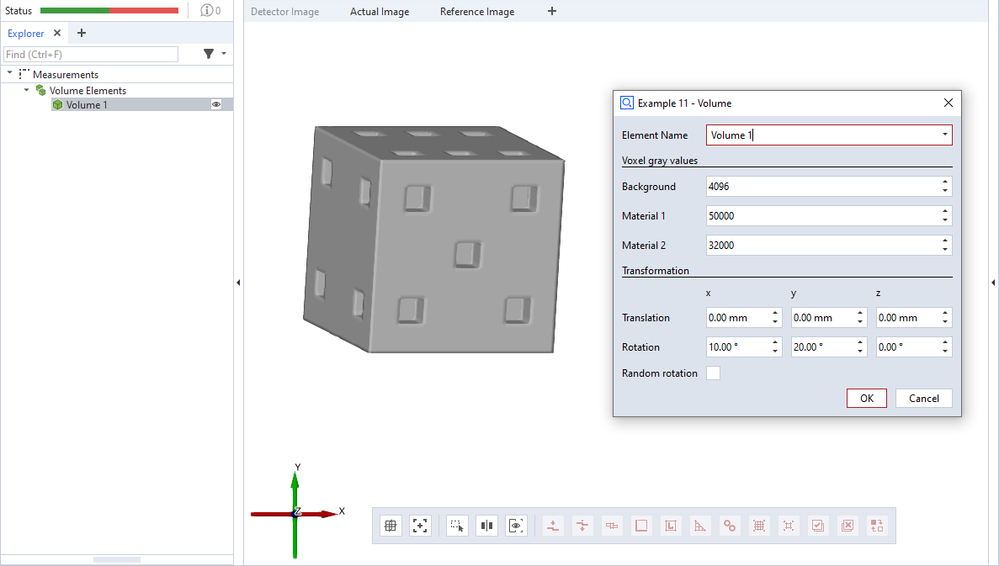

scripted_actual_volume

This is an example for a scripted ‘volume’ element. The volume data is created as an np.array of shape 70×70×70. Each element defines a voxel with a default gray value gv1 (calculation(), lines 11&12). The function set_voxeldata() changes some of the gray values to gv2 (line 13). The resulting volume object resembles a die. Finally the volume data is padded in each direction with voxels of the background gray value gv0.
The dialog allows to set the gray values and to apply a transformation to the volume element.
Caution
The voxel (measurement) coordinate system may differ from the CAD coordinate system.
Note
Please see offset_point_v2.md for a complete scripted elements example with detailed description.
Function for setting voxel data
1def set_voxeldata(voxels, gv, e):
2 """Set the gray value of some voxels
3
4 :param voxels: np.array() of shape (70, 70, 70)
5 :param gv: gray value to set
6 :param e: extend around (fixed) nominal voxel coordinate
7 """
8
9 # (1) - front
10 for x in range(-e, e + 1):
11 for y in range(-e, e + 1):
12 for z in range(-e, e + 1):
13 voxels[35 + x, e + y, 35 + z] = gv
14
15 # (6) - back
16 for x in range(-e, e + 1):
17 for y in range(-e, e + 1):
18 for z in range(-e, e + 1):
19 voxels[15 + x, 69 - e + y, 15 + z] = gv
20 voxels[15 + x, 69 - e + y, 35 + z] = gv
21 voxels[15 + x, 69 - e + y, 55 + z] = gv
22 voxels[55 + x, 69 - e + y, 15 + z] = gv
23 voxels[55 + x, 69 - e + y, 35 + z] = gv
24 voxels[55 + x, 69 - e + y, 55 + z] = gv
25
26 # (3) - top
27 for x in range(-e, e + 1):
28 for y in range(-e, e + 1):
29 for z in range(-e, e + 1):
30 voxels[15 + x, 15 + y, 69 - e + z] = gv
31 voxels[35 + x, 35 + y, 69 - e + z] = gv
32 voxels[55 + x, 55 + y, 69 - e + z] = gv
33 #[...]
Dialog and calculation functions
1def dialog(context, params):
2 #[...]
3
4def calculation(context, params):
5 valid_results = False
6
7 e = 4
8 gv0 = params['gv_background']
9 gv1 = params['gv_mat1']
10 gv2 = params['gv_mat2']
11 voxels = np.ones((70, 70, 70), dtype=np.uint16)
12 voxels = voxels * gv1
13 set_voxeldata(voxels, gv2, e)
14 voxels = np.pad(voxels, 30, 'constant', constant_values=gv0)
15
16 rx = params['rx']
17 ry = params['ry']
18 rz = params['rz']
19 dx = params['dx']
20 dy = params['dy']
21 dz = params['dz']
22
23 transformation = gom.Mat4x4([
24 cos(rz) * cos(ry), cos(rz) * sin(ry) * sin(rx) - sin(rz) *
25 cos(rx), cos(rz) * sin(ry) * cos(rx) + sin(rz) * sin(rx), dx - 35,
26 sin(rz) * cos(ry), sin(rz) * sin(ry) * sin(rx) + cos(rz) *
27 cos(rx), sin(rz) * sin(ry) * sin(rx) - cos(rz) * sin(rx), dy - 35,
28 -sin(ry), cos(ry) * sin(rx), cos(ry) * cos(rx), dz - 35,
29 0, 0, 0, 1
30 ])
31
32 # Calculating all available stages
33 for stage in context.stages:
34 # Access element properties with error handling
35 try:
36 context.result[stage] = {'voxel_data': voxels, 'transformation': transformation}
37 context.data[stage] = {"ude_mykey": "Example 11"}
38 except Exception as error:
39 context.error[stage] = str(error)
40 else:
41 valid_results = True
42 return valid_results